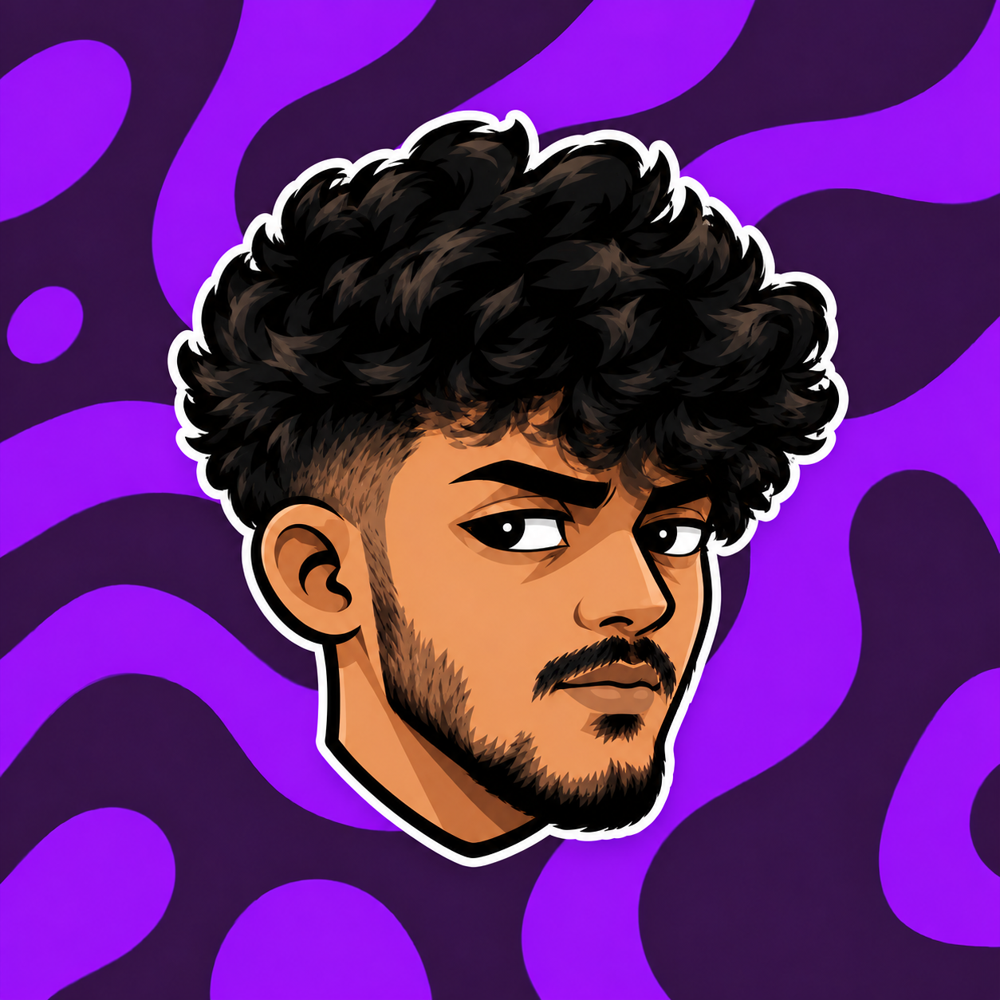

Hey, I'm Sonal Ravishka.
Ideas with
character.
Design in motion.
Graphic designer and video editor based in Kandy, Sri Lanka. Exploring junior and trainee opportunities in graphic design, with a focus on brand identity, digital creatives and visual storytelling.
Explore my work ↗
MAKE ITFEEL
SOMETHING.
01 / SELECTED PROJECTS
Selected work.
Original brand identity projects and creative practice in motion and video editing. Select a project to learn more, or explore my portfolio on Behance.
02 / PERSONAL PROFILE
A curious mind.
A creative eye.
Good design starts with an idea.
I love finding its personality.
I'm Sonal, a graphic designer and video editor based in Kandy. My work explores brand identities, digital visuals and motion — from a thoughtfully shaped logo to a perfectly timed cut.
My background in Advertising & Multimedia at NIBM informs how I approach typography, illustration and storytelling. I'm continuing to develop my craft in Premiere Pro and After Effects, one project at a time.
Advertising & Multimedia
Advanced Diploma coursework · NIBM
Typography, digital image manipulation, drawing & illustration, film language, animation, photography and web design.
03 / DESIGN & EDITING SKILLS
Creative skills.
The tools I use to bring
visual stories to life.
Photoshop
Image manipulation
& digital creatives
Illustrator
Visual identities
& vector illustration
Premiere Pro
Video editing
& visual storytelling
After Effects
Exploring motion
& animated typography